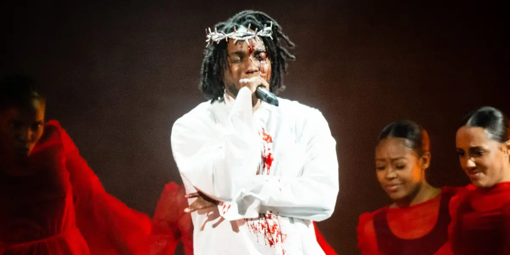
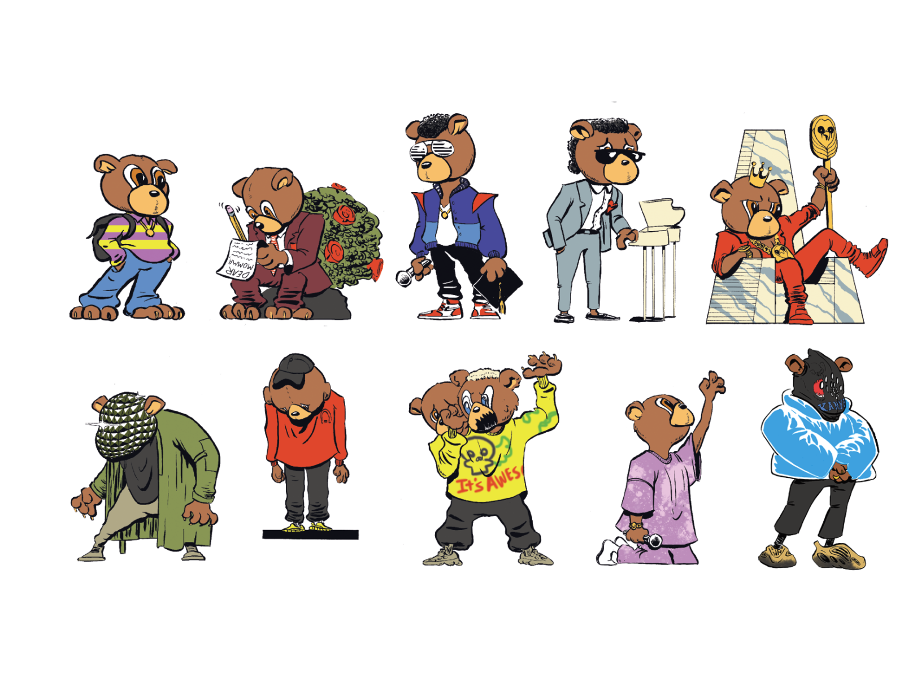
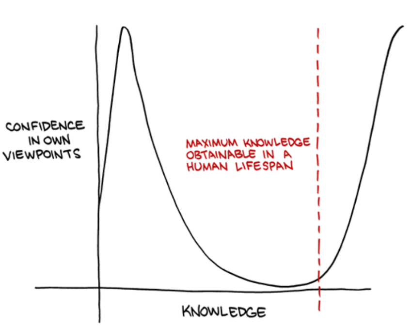

Finding Common Threads in Artists
2024-05-25
I love listening to music. It's my favorite medium of art. I also love making things. I hope my website is indicative of that. So naturally, you would think that I would love making music, but despite that, I feel that I am always in some sort of creative block, and that goes far beyond just music. I've decided that maybe I should look into some of my favorite creators and find common threads in the art that they make.
My Inspirations
There are many people who inspire me: some of my friends, celebrities, philosophers, visual artists, filmmakers, designers, website owners, etc. I love music the most, though, so I will list a few of the musicians that inspire me, and they are as follows (in no particular order):
- Kendrick Lamar
- Tyler, the Creator
- Kanye West (pre 2022)
- Radiohead
- Rick Rubin
- André 3000
There are many more, but I think these artists exemplify what kind of artist that I would want to be if I ever take art seriously.
Less is More
Rick Rubin is the king of this concept. He is well-known as a reducer, rather than a producer. He famously helped reduce Kanye West's Yeezus from 3.5 hours to a minimal 40-minute album, for example. This philosophy of reducing makes words cut deeper and the message clearer.
Not only is Rick Rubin a master in reducing clutter in music, but it seems that he reduced clutter out of his life too, living in a house that is nearly entirely white, has no clocks, and, just like the music he reduces, is very minimal.
Some other artists that I feel exemplify this "Less is More" ideology are Kendrick Lamar and André 3000. In recent years, they have been pretty much radio silent with the work they are currently doing and only ever make public appearances when they are ready to do so. They don't post much, if at all, on social media, and are very minimal with their marketing. Since their work is not dependent on hype, they can spend more time working on their craft and create a memorable, long-lasting piece of work. Both Kendrick and André 3000's most recent albums, Mr. Morale and the Big Steppers and New Blue Sun, respectively, are albums that I love and are incredibly mature. I hope that someday I can reach the levels of artistry that these two have to make these amazing pieces of art.
Honesty, Humility, and the Limelight
It shouldn't be a surprise that Kendrick Lamar and André 3000 act so similarly, and it is because neither of them wants to be in the limelight. As Kendrick said, "I got a son to raise". André 3000 has been spotted playing music in public many times just for the love of music. I think that because these two have achieved the goals that they strived to achieve, have enough money to send their grandchildren to college, and have a very supportive network, they are no longer going full-throttle with their creative output. Ironically enough, I think that is why they are still able to make incredible work.
One thing that I can appreciate about Kendrick, but even more so for Tyler, the Creator, and unfortunately, Kanye West, is their honesty and ability to speak their minds despite what others say. On some occasions, Kanye West has said some truly poetic things. One of my favorite quotes was something he said sometime in 2007: "And they say overconfident like it's a bad thing... How can you be overconfident? You should be overconfident. You should have more confidence." Quite a Kanye West quote for sure, and I completely agree with that. However, this may feel like a contradiction with the idea of humility.
I remember I was conflicted when Kendrick rapped that he's "smokin' on your top 5" while also making an entire track about not being my savior and that he chose himself. It gets even more confusing with recent events and Kendrick proving that he's the best rapper by killing Drake (lyrically). My interpretation is that Kendrick knows that he's the best, but there is a pedestal that he now seems to be forced to stand on, but this pedestal makes him appear less human and more Christ-like, hence the diamond-encrusted crown of thorns. Mr. Morale and the Big Steppers discusses Kendrick's struggle with being human and the expectations that people have for him, and how he has been attempting to stop conflating the audience's expectations to his own. This is how Kendrick is able to both be "overconfident" yet humble.

As mentioned, Tyler, the Creator is another artist who is the epitome of confidence. He has been telling people that he will win a Grammy for at least a decade, so he was completely prepared when he surprised people with IGOR and its reception, leading to his inevitable Grammy win. As I also mentioned, Tyler often speaks his mind, and one common thing that I hear him talk about is being interested in whatever you are interested in. He once talked about how he hates "Hip-Hop Twitter", where he feels that everyone likes the same artists/albums. Tyler controversially said that 2Pac is not in his top 5 rappers list, which is probably sacrilegious for hip-hop Twitter, but he spoke the truth. 2Pac is in everyone's top 5, but at the same time, there are plenty of artists that I'm sure that people enjoy listening to more, but due to the nature of lists and hiveminds, they aren't discussed as much as they should be. As a result, everyone is a follower and nobody is leading.
Leaders Change
Besides Rick Rubin, every artist that I listed has very distinct "eras" based on their most recent album. Kanye West has consistently changed not just the music landscape, but the fashion landscape by constantly reinventing himself. In the 2000s, he pushed the limits on what a rapper could be, wearing pink polos and not rapping about the gangster life. With Graduation, he made music that could be played in a stadium. 808s and Heartbreak was a bigger left turn than Kid A was from Radiohead's OK Computer, in my opinion. I can go on and on about Kanye's different eras, and the same can be said about Tyler, the Creator and his albums as well. The underlying fact is that each of these artists found a concept that deeply resonated with them and they pushed their respective genres forward by delivering a concept album with core themes and ideologies.

As an example, Kid A is my favorite Radiohead album. Without even really paying attention to the lyrics, I get a vivid image of what's going on, and this is especially amplified in tracks like "How to Disappear Completely" and "Motion Picture Soundtrack". When looking into the lyrics, it explains the cold atmosphere and dream-like feeling as Thom Yorke sings about isolation, anxiety, fear, dreaming, and struggling. The album cover only adds to the experience, and I love staring at it. By listening to Kid A, you get to experience a window into how the band members felt at that point in their lives, and it's truly beautiful.
The reason why change is so important is that without it, artists cannot grow creatively. Once again, Radiohead is a great example. They could not have made Kid A without OK Computer, and they couldn't have made OK Computer without The Bends, and they couldn't have made The Bends without Pablo Honey. Like many Radiohead fans, I don't particularly like Pablo Honey all that much. When listening to it, it sounds like a completely different group of people, but it's such an important piece of work because it is what allowed Radiohead to progress and make some of their best work.
The Anti-Inspiration
The recent events of Kendrick Lamar killing Drake (lyrically) intrigued me a lot. The biggest reason why is that Kendrick and Drake are polar opposites and yet they are two of the biggest artists in hip-hop. After writing this blog, I see why there is such a large difference between Kendrick, why Kendrick hates Drake so much, and why I think that Drake is the prime example of exactly the person who I don't want to be.
Going through my main points, what does Drake lack? I started off with "Less is More". Drake has consistently been outputting albums and features, but to me and many others, there is much less heart put into them. There is a reason why Kendrick can mention Mr. Morale and make it seem recent, yet Honestly, Nevermind seems like a lifetime ago for Drake, despite it being released after Mr Morale. The shelf life of his recent projects appears to be shorter. Once again, it's because Drake employs the complete opposite of all the points that I made.
Drake loves attention. Drake loves being praised and doesn't take hate lightly. Drake has lied. These points are just as consistent as Drake's musical output, but it's not nearly as bad as the final point that I made: that leaders change. In my opinion, Drake was a juggernaut of change for the first few years of his career, but around 2017-2018, and especially after Pusha T put him in his place, he started playing things safer. Everything felt so sanitized and for the lowest common denominator. By this point, I, along with many others, feel that Drake had completely stopped making art and started making products. That isn't to say that I don't like any of Drake's recent musical output, but I find it hard to put Drake and Kendrick Lamar in the same sentence without addressing the elephant in the room. I think Kendrick put it elegantly when he said that he's not a rap artist, but rather a scam artist.
Throughout this beef, Kendrick actually used all the points that I mentioned. He let his music speak for itself, had a very consistent and strong message that he brought the audience through in three distinctive sections, and managed to make art while partially destroying Drake's image. Drake, on the other hand, employed his strategy of using streamers and social media to speak on his behalf; his tracks were all over the place and didn't have any common thread. The only exception was Push-Ups, which I personally think is one of the better tracks that came out of the beef. Drake had very sharp and clever writing that truly shaped the public perception at the time, and for good reason.
Employing These Strategies
I think the big takeaway here is that good work takes time and it's better to put in that extra 10%. I need to learn to shut up sometimes, have faith in my ideas, and be honest with myself and others, but also know my strengths.
One thing that I'm personally constantly struggling with is the lack of a frame of reference when it comes to my knowledge. I know that I know things, but at the same time, I don't know how little others know, and how much more there is to know. I feel that there is always more to learn, which in general is a good mindset (growth mindset), but it makes it difficult to know if it is a good time to look back and show or teach others what I've learned. I have the constant fear of being wrong or not being knowledgeable enough to make a notable contribution to whatever I want to talk about. It may be the reason why I find making music too difficult, or even why I struggle to write blog posts. Despite being able to write about things like package managers in 2021, I feel that I can't do that anymore because I feel that it should be common knowledge, but of course, there are people who aren't aware, like I was just three years ago.

It's like I'm stuck in the valley of despair in the Dunning-Kruger effect, except there's no light at the end of the tunnel since there's so much knowledge for me to obtain to feel like I am truly an expert on a topic. At the same time, I find it difficult to accept that I won't be an expert on everything. There is only so much knowledge that I can obtain in a given time. Hopefully, by employing the strategies that I have written about, I can use it as a reference to help others or write about something that many can resonate with.
At the end of the day, creativity and storytelling is what helps us understand each other more. If I can learn to tell better stories through music, writing, and other creative mediums, I can be invaluable to someone who consumes the work. So maybe, less is more, but also more is less. I guess I'll never know if I don't take the necessary steps forward, but it's also wise not to reveal my entire deck too early. It's a fine balancing act and will take time for me to get better at it.